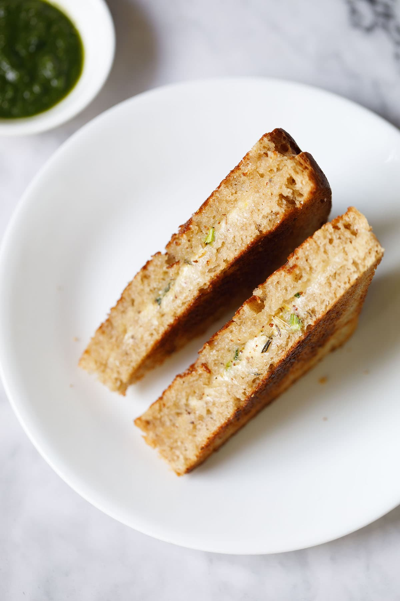

Sandwich

Description
Grilled cheese sandwich is one of our favorite quick and simple vegetarian recipes that only requires a few key ingredients.
It’s made with a good loaf of bread (fresh or day old) a tangy block of cheddar or mozzarella cheese, a bit of softened butter, and flavorful spices and herbs.
Ingredients
- Bread
- Cheese
- Basil
- Celery
- Spices
Steps
- First, slice your bread loaf in ½ inches slices. You want about 8 to 10 slices total, depending on how many cheese sandwiches you are making. Here I have used homemade Whole Wheat Bread.
- Spread softened butter on the slices of bread.
- Top half of the slices with 3 to 4 tablespoons or more (depending on the size of the bread slices) of freshly grated cheddar or mozzarella cheese, or a mix of both. For 8 to 10 slices you will need a total of about 1 cup of grated cheese.
- Sprinkle with a pinch or two of various dried herbs, red chilli flakes and crushed black pepper. Here I’ve used parsley, thyme and oregano with bits of chilli pepper flakes. Feel free to add your favorite herbs.
- For a bit of an elevated grilled cheese sandwich, top the cheese lightly with some chopped fresh basil and finely chopped celery. You can use dried basil in place of fresh basil.
Sprinkle with one to pinches of salt (to taste) evenly all over. If you don’t have fresh celery you can swap with celery salt, and omit the salt.
- Cover the cheese topped bread with the buttered slice.
- Heat a heavy or a thick bottomed skillet, or a frying pan, on low to medium-low heat on the stovetop. Spread some butter in the skillet, and allow it to melt. Then place the cheese sandwich in the skillet.
- Spread some more softened butter on top of the bread.
- Gently press the sandwich with a spatula so that you can get nice, evenly toasted and crispy texture. You can even place a heavy object, like a clean plate, on the sandwich.
- When the bottom is crusty and golden, flip over gently with a spatula. I like my sandwiches to be more browned, toasty and crisp.
Grill the second side for another few minutes until crisp and golden, pressing with the spatula for even cooking.
- Remove the grilled sandwich and transfer to a chopping board. Cut in two and serve hot with Ketchup, Mayo or any dip of your choice.
Make all the cheese sandwiches this way on the skillet. If you use a large skillet, grill two to three sandwiches at the same time on the skillet.